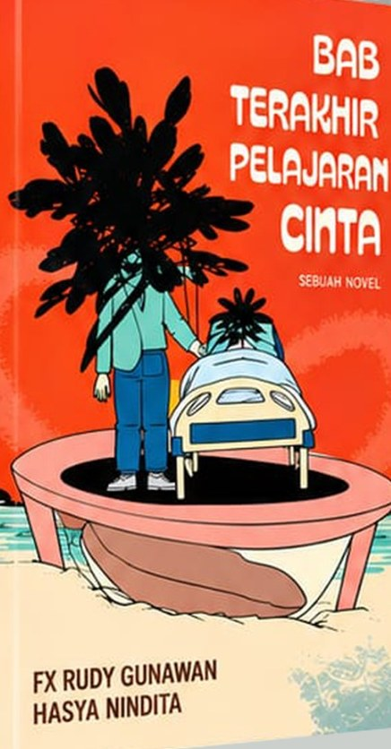
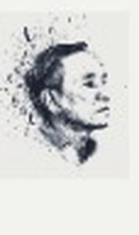
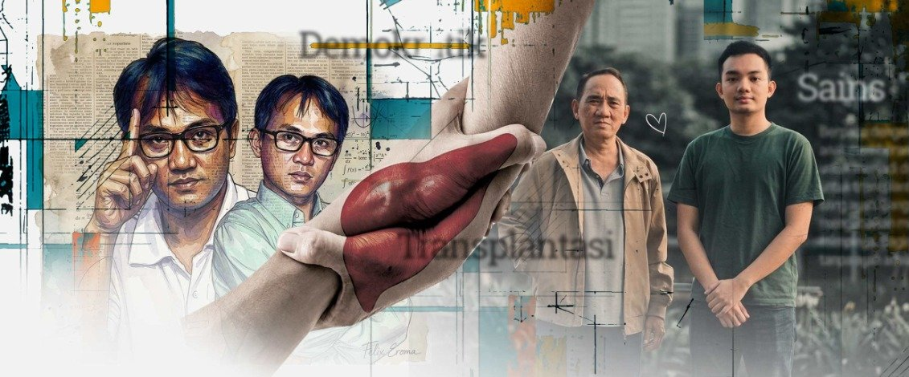

RG
FX Rudy Gunawan
PEMBACA & SAHABAT
“Sebuah perjalanan yang menyentuh, tentang hidup, pilihan, dan keberanian untuk memulai kembali. Kisah yang terasa dekat dengan kehidupan kita.”
KESAN PEMBACA ✦ ✦ ✦ ✦ ✦
SEBUAH KISAH TENTANG KEHILANGAN, KESEMPATAN KEDUA, DAN HAL-HAL YANG TAK PERNAH BENAR-BENAR PERGI.



Ada cinta yang tidak pernah dituntaskan,
ada diberikan sepanjang demi seseorang,
sampai seseorang bisa hidup sekali lagi.
— HIDUP KEDUA, ANDI ARIEF —
Hidup Kedua adalah kisah tentang manusia, pilihan, kehilangan, serta perasaan yang tetap hidup meski waktu terus berjalan.
Melalui tokoh dan perjalanan yang saling terhubung, novel ini mengajak pembaca menyelami arti kesempatan kedua — bukan semata untuk mengulang, tetapi untuk memahami.
PERJALANAN CERITA
Ketika semua bermula.
Tentang jarak dan rasa yang tersisa.
Kesempatan kedua yang mengubah segalanya.
Harapan di tengah perjalanan.
Tempat semuanya menemukan arti.
PEMBACA & SAHABAT
“Sebuah perjalanan yang menyentuh, tentang hidup, pilihan, dan keberanian untuk memulai kembali. Kisah yang terasa dekat dengan kehidupan kita.”
PEMBACA & SAHABAT
“Novel ini mengingatkan kita bahwa di balik setiap kehilangan selalu ada kesempatan untuk memahami hidup dengan cara yang berbeda.”
SEBUAH PERAYAAN CERITA DAN KEHIDUPAN.
Pendaftaran tamu dan pembukaan pintu.
RSVP
Kami mengundang Anda untuk menjadi bagian dari malam istimewa peluncuran novel Hidup Kedua.
Gedung PLN Kantor Pusat
Jl. Trunojoyo Blok M-I No. 135, Kebayoran Baru, Jakarta Selatan